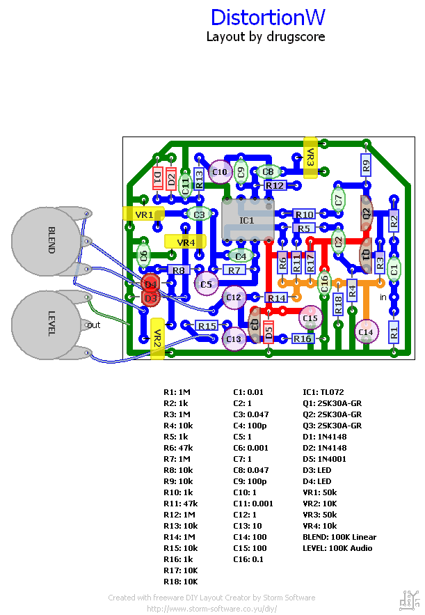

JAM（MXR Distortion+ ×2）
2007年07月15日 カテゴリー：自作エフェクター（アナログ）
MXRのDistortion+を2つ並列に搭載したものです。
▽回路図

Bumper crop studioのBlendaというミキサーにDistortion+を二つ入れただけです。トリマーで2つのDistortion+のセッティングを固定しておき、それをミックスします。
▽レイアウト

結構キツキツです。トリマーは小さいヤツじゃないと厳しそうです。クリッピングダイオードの部分を一応ソケット化しています。その他高音域を調整できるようにC6とC11もソケット化しておきました。
片方はクランチ、片方はハイゲインに調整してみました。クランチ側からハイゲイン側にブレンドつまみを動かしていくと、奥のほうで歪んだ音が聞こえる感じで、ちょっと不思議な感覚です。ブレンドツマミが真ん中だとちょうどよく混ざり合っていい感じです。更にハイゲイン側にすると徐々に歪みが増していきます。ボリュームが変わらずに歪が増すのはこれまた不思議です。一風変わったエフェクターになりました。Distortion+はノイズが多いという噂もあるんですが、そんなには気になりませんでした。まぁハイ寄りではあります。
ケースが微妙な色をしています。これは右手に白、左手に黒のスプレーをもって同時に塗ってみた結果です。まさにブレンド。LEDを白にしたので写真ではA の字がつぶれてますね…あとケースのネジ穴がバカになってネジを紛失したので、蝶つがいを使っています。電池交換は楽ですが、ナットのせいでケース内が若干狭くなるのが痛いです。
追記：
レイアウト若干修正。ボリューム調整のトリマーはないほうがいいのかもしれませんが一応そのままです。Garrettaudioのトリマーなのでふつうのトリマーだと利き方が逆かもしれません。
再追記：
ブレンドつまみを回すと、歪みが増すというよりブレンド具合が変わるだけみたいです。当初目標としていた「ボリュームを変えずに歪みを増す」というのはどうも達成できないようです。でも原音をブレンドする歪みというのはかなり良さそうなので、クリーンブースターとディストーションのブレンドに変更しようと思います。それに伴って3ノブになりそうです。とりあえずつづく。
再再追記：
分解してPOTIONに生まれ変わりました。